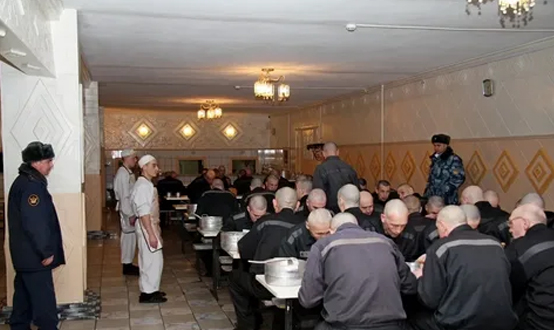
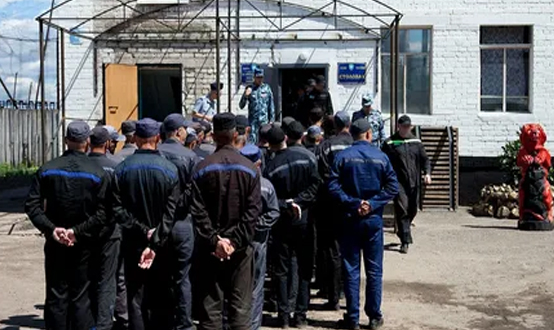

Общая характеристика преступлений в сфере экономической деятельности
Преступления в сфере экономической деятельности урегулированы статьями 169–204.2. УК РФ (глава 23).
Родовым объектом данной категории преступлений является совокупность общественных отношений, складывающихся в сфере производства, распределения, обмена и потребления материальных благ. Видовым объектом являются группы общественных отношений, составляющие содержание отдельных отраслей экономической деятельности. Непосредственный объект определяется для каждого преступного посягательства самостоятельно, это конкретное общественное отношение, складывающееся в процессе экономической деятельности, на которое посягает данное преступление.
С объективной стороны большинство преступлений в сфере экономической деятельности совершается путем активных действий, некоторые и путем бездействия (например, уклонение гражданина от уплаты налогов). В некоторых составах принципиален способ совершения деяния: например, незаконное получение кредита путем предоставления банку или иному кредитору заведомо ложных сведений о хозяйственном положении либо финансовом состоянии индивидуального предпринимателя или организации.
По конструкции составы могут быть как материальными (например, незаконное получение кредита, заведомо ложная реклама и др.), так и формальными (например, регистрация незаконных сделок с землей, приобретение или сбыт имущества, заведомо добытого преступным путем и др.).
С субъективной стороны рассматриваемые преступления характеризуются умышленной виной. В некоторых случаях имеет значение мотив и цель: например, при изготовлении поддельных денег и ценных бумаг лицо должно преследовать цель сбыта.
Субъект преступлений — физическое вменяемое лицо, достигшее 16 лет. Для отдельных посягательств характерен специальный субъект: например, преднамеренное банкротство может быть совершено только руководителем или собственником коммерческой организации либо индивидуальным предпринимателем.
Классификация преступлений в сфере экономической деятельности
Преступления в сфере экономической деятельности можно классифицировать следующим образом.
1. Преступления в сфере экономической деятельности, совершаемые должностными лицами:
- воспрепятствование законной предпринимательской деятельности (ст. 169 УК) - неправомерный отказ в регистрации индивидуального предпринимателя или коммерческой организации; уклонение от регистрации; неправомерный отказ в выдаче специального разрешения (лицензии); ограничение прав и законных интересов индивидуального предпринимателя или коммерческой организации и т.д. Субъект преступления — специальный — должностное лицо, наделенное правом осуществления регистрации индивидуальных предпринимателей и коммерческих организаций и выдачи лицензий на осуществление определенных видов деятельности;
- регистрация незаконных сделок с недвижимым имуществом (ст. 170 УК) – при условии корыстной или иной личной заинтересованности должностного лица и использования им своего служебного положения;
- фальсификация единого государственного реестра юридических лиц, реестра владельцев ценных бумаг или системы депозитарного учета (ст. 170.1. УК);
- внесение заведомо ложных сведений в межевой план, технический план, акт обследования, проект межевания земельного участка или земельных участков либо карту-план территории (ст. 170.2. УК);
2. Преступления в сфере осуществления предпринимательской деятельности:
- незаконное предпринимательство (ст. 171 УК) – осуществление предпринимательской деятельности без регистрации; без специального разрешения (лицензии), когда такое разрешение (лицензия) обязательно; занятие деятельностью, не обусловленной лицензией и т.п.;
- производство, приобретение, хранение, перевозка или сбыт товаров и продукции без маркировки и (или) нанесения информации, предусмотренной законодательством Российской Федерации (ст. 171.1. УК);
- незаконные организация и проведение азартных игр (ст. 171.2. УК);
- незаконные производство и (или) оборот этилового спирта, алкогольной и спиртосодержащей продукции (ст. 171.3. УК);
- незаконная розничная продажа алкогольной и спиртосодержащей пищевой продукции (ст. 171.4. УК) – при условии неоднократности деяния, т.е. совершения деяния лицом, подвергнутым административному наказанию за аналогичное деяние, в период, когда оно считается подвергнутым административному наказанию;
- незаконное осуществление деятельности по предоставлению потребительских кредитов (займов) (ст. 171.5. УК);
- незаконная банковская деятельность (ст. 172 УК) – без регистрации или без специального разрешения (лицензии) в случаях, когда такое разрешение (лицензия) обязательно, если это деяние причинило крупный ущерб гражданам, организациям или государству либо сопряжено с извлечением дохода в крупном размере;
- фальсификация финансовых документов учета и отчетности финансовой организации (ст. 172.1. УК);
- организация деятельности по привлечению денежных средств и (или) иного имущества (ст. 172.2. УК) – «финансовые пирамиды»;
- невнесение в финансовые документы учета и отчетности кредитной организации сведений о размещенных физическими лицами и индивидуальными предпринимателями денежных средствах (ст. 172.3. УК);
- незаконное образование (создание, реорганизация) юридического лица (ст. 173.1. УК);
- незаконное использование документов для образования (создания, реорганизации) юридического лица (ст. 173.2. УК);
- приобретение, хранение, перевозка, переработка в целях сбыта или сбыт заведомо незаконно заготовленной древесины (ст. 191.1. УК);
- контрабанда (незаконное перемещение через таможенную границу РФ) алкогольной продукции и (или) табачных изделий (ст. 200.2. УК);
3. Преступления в сфере экономической деятельности, связанные с банкротством:
- неправомерные действия при банкротстве (ст. 195 УК) – сокрытие имущества или имущественных обязательств, сведений об имуществе, о его размере, местонахождении либо иной информации об имуществе; передача имущества в иное владение; отчуждение имущества; уничтожение имущества; сокрытие, уничтожение, фальсификация бухгалтерских и иных учетных документов, отражающих экономическую деятельность. Обязательным признаком объективной стороны преступления является причинение крупного ущерба;
- преднамеренное банкротство (ст. 196 УК) – умышленное доведение организации до неплатежеспособности с целью хищения средств со счетов, получения льготных кредитов и т.п.;
- фиктивное банкротство (ст. 197 УК) – заведомо ложное объявление руководителем или собственником коммерческой организации либо индивидуальным предпринимателем о своей несостоятельности в целях введения в заблуждение кредиторов для получения отсрочки или рассрочки причитающихся кредиторам платежей или скидки с долгов, а равно для неуплаты долгов;
4. Преступления в сфере кредитно-финансовой деятельности:
- незаконное получение кредита (ст. 176 УК);
- злостное уклонение от погашения кредиторской задолженности (ст. 177 УК);
- нарушение правил изготовления и использования государственных пробирных клейм (ст. 181 УК);
- злоупотребления при выпуске ценных бумаг (эмиссии) (ст. 185 УК);
- злостное уклонение от раскрытия или предоставления информации, определенной законодательством Российской Федерации о ценных бумагах (ст. 185.1. УК);
- нарушение порядка учета прав на ценные бумаги (ст. 185.2. УК);
- манипулирование рынком (ст. 185.3. УК) – умышленное распространение через СМИ заведомо ложных сведений или совершение операций с финансовыми инструментами, иностранной валютой и (или) товарами либо иные умышленные действия, если в результате таких незаконных действий цена, спрос, предложение или объем торгов финансовыми инструментами, иностранной валютой и (или) товарами отклонились от уровня или поддерживались на уровне, существенно отличающемся от того уровня, который сформировался бы без учета указанных выше незаконных действий, и такие действия причинили крупный ущерб гражданам, организациям или государству либо сопряжены с извлечением излишнего дохода или избежанием убытков в крупном размере;
- воспрепятствование осуществлению или незаконное ограничение прав владельцев ценных бумаг (ст. 185.4. УК);
- фальсификация решения общего собрания акционеров (участников) хозяйственного общества или решения совета директоров (наблюдательного совета) хозяйственного общества (ст. 185.5. УК);
- неправомерное использование инсайдерской информации (ст. 185.6. УК) о деятельности организаций, способной повлиять на финансовый рынок;
- изготовление, хранение, перевозка или сбыт поддельных денег или ценных бумаг (ст. 186 УК);
- неправомерный оборот средств платежей (ст. 187 УК) – платежных карт, распоряжений о переводе денежных средств, документов или средств оплаты, электронных средств, электронных носителей информации, технических устройств, компьютерных программ, предназначенных для неправомерного осуществления приема, выдачи, перевода денежных средств;
- незаконные экспорт из РФ или передача сырья, материалов, оборудования, технологий, научно-технической информации, незаконное выполнение работ (оказание услуг), которые могут быть использованы при создании оружия массового поражения, вооружения и военной техники (ст. 189 УК);
- невозвращение на территорию РФ культурных ценностей (ст. 190 УК);
- уклонение от уплаты таможенных платежей, специальных, антидемпинговых и (или) компенсационных пошлин, взимаемых с организации или физического лица (ст. 194 УК);
- контрабанда наличных денежных средств и (или) денежных инструментов (ст. 200.1. УК);
- привлечение денежных средств граждан в нарушение требований законодательства Российской Федерации об участии в долевом строительстве многоквартирных домов и (или) иных объектов недвижимости (ст. 200.3. УК);
5. Преступления, нарушающие принцип добросовестной конкуренции:
- ограничение конкуренции (ст. 178 УК) – если это деяние причинило крупный ущерб гражданам, организациям или государству либо повлекло извлечение дохода в крупном размере;
- принуждение к совершению сделки или к отказу от ее совершения (ст. 179 УК);
- незаконное использование индивидуализации товаров (работ, услуг) (ст. 180 УК) – чужого товарного знака, знака обслуживания, наименования места происхождения товара или сходных с ними обозначений для однородных товаров, если это деяние совершено неоднократно или причинило крупный ущерб;
- незаконное получение и разглашение сведений, составляющих коммерческую, налоговую или банковскую тайну (ст. 183 УК);
- оказание противоправного влияния (подкуп, оказание услуг и т.п.) на результат официального спортивного соревнования или зрелищного коммерческого конкурса (ст. 184 УК);
6. Преступления в сфере валютной деятельности:
- незаконный оборот янтаря, нефрита или иных полудрагоценных камней, драгоценных металлов, драгоценных камней либо жемчуга (ст. 191 УК);
- нарушение правил сдачи государству драгоценных металлов и драгоценных камней (ст. 192 УК);
- уклонение от исполнения обязанностей по репатриации (возврате) денежных средств в иностранной валюте или валюте РФ (ст. 193 УК);
- совершение валютных операций по переводу денежных средств в иностранной валюте или валюте РФ на счета нерезидентов с использованием подложных документов (ст. 193.1. УК);
7. Преступления, связанные с уклонением от уплаты налогов:
- уклонение физического лица от уплаты налогов, сборов и (или) физического лица-плательщика страховых взносов от уплаты страховых взносов (ст. 198 УК);
- уклонение от уплаты налогов, сборов, подлежащих уплате организацией, и (или) страховых взносов, подлежащих уплате организацией-плательщиком страховых взносов (ст. 199 УК);
- неисполнение обязанностей налогового агента (ст. 199.1. УК);
- сокрытие денежных средств либо имущества организации или индивидуального предпринимателя, за счет которых должно производиться взыскание налогов, сборов, страховых взносов (ст. 199.2. УК);
- уклонение страхователя-физического лица от уплаты страховых взносов на обязательное социальное страхование от несчастных случаев на производстве и профессиональных заболеваний в государственный внебюджетный фонд (ст. 199.3. УК);
- уклонение страхователя-организации от уплаты страховых взносов на обязательное социальное страхование от несчастных случаев на производстве и профессиональных заболеваний в государственный внебюджетный фонд (ст. 199.4. УК);
8. Преступления, посягающие на законный порядок распределения материальных благ:
- легализация (отмывание) денежных средств или иного имущества, приобретенных другими лицами преступным путем (ст. 174 УК) – придание названному имуществу законного характера;
- легализация (отмывание) денежных средств или иного имущества, приобретенных лицом в результате совершения им преступления (ст. 174.1. УК);
- приобретение или сбыт имущества, заведомо добытого преступным путем (ст. 175 УК);
9. Преступления в сфере государственных закупок:
- злоупотребления в сфере закупок товаров, работ, услуг для обеспечения государственных или муниципальных нужд (ст. 200.4. УК);
- подкуп работника контрактной службы, контрактного управляющего, члена комиссии по осуществлению закупок (ст. 200.5. УК);
- заведомо ложное экспертное заключение в сфере закупок товаров, работ, услуг для обеспечения государственных и муниципальных нужд (ст. 200.6. УК);
- подкуп арбитра (третейского судьи) (ст. 200.7. УК).